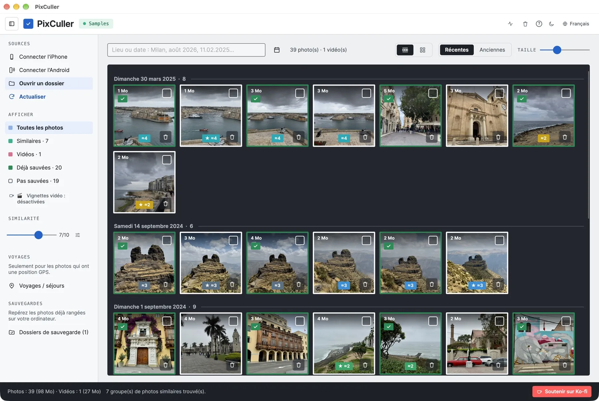
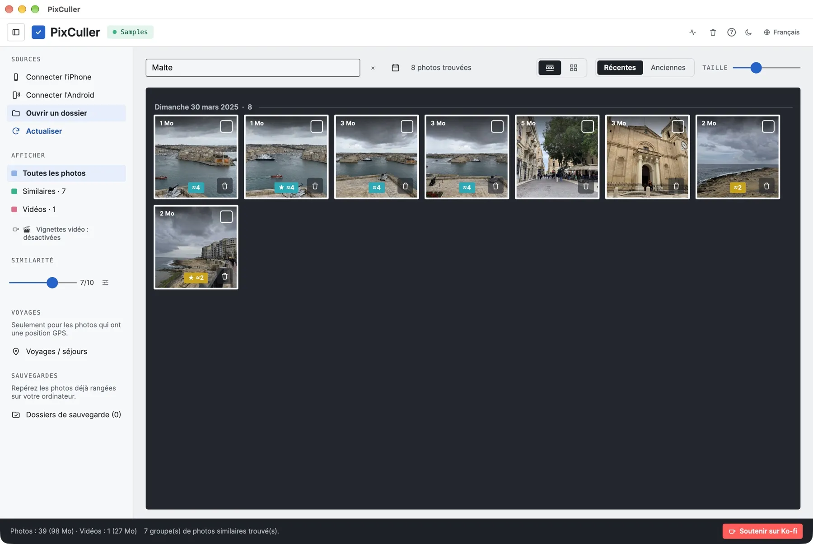

Triez votre iPhone depuis votre Mac ou PC.
Branchez le câble. PixCuller repère les doublons et les rafales, vous montre les photos similaires côte à côte, et vous laisse supprimer des centaines de photos en quelques clics. Fonctionne aussi avec Android.
Gratuit · Sans compte · Vos photos ne quittent jamais votre ordinateur

Comment ça marche
Branchez
Reliez votre iPhone ou votre téléphone Android par câble USB. Rien à installer sur le téléphone, ni cloud, ni compte.
Comparez
Les photos similaires, les doublons et les rafales sont repérés pour vous. Affichez-en jusqu'à six côte à côte et gardez la meilleure.
Supprimez
Marquez ce dont vous ne voulez plus et supprimez des centaines de photos d'un coup, directement sur le téléphone.
Un aperçu de l'app




Pourquoi PixCuller
Une erreur se rattrape
Par défaut, chaque photo supprimée est gardée 30 jours dans un dossier de votre ordinateur : vous pouvez la réimporter.
Rien ne quitte votre ordinateur
Aucune photo ni position GPS n'est envoyée où que ce soit. Pas de compte, pas de cloud.
Pensé pour aller vite
Cochez, glissez, Ctrl/⌘+clic : sélectionnez des centaines de photos en quelques gestes.
Déjà sauvegardée ? Vous le voyez
Ajoutez vos dossiers de sauvegarde : les photos qui ont déjà une copie identique sur votre ordinateur sont encadrées de vert, vous savez ce qui peut partir sans risque.
Cherchez par lieu ou par date
« Milan », « août 2026 », « 11.02.2025 » : tapez-le et retrouvez les photos, hors ligne, grâce à leur GPS. Un bouton calendrier filtre par période.
Jour par jour
La grille montre un trait et une date pour chaque jour, ou reste dense avec la date au survol et le long de la barre de défilement.
Gratuit, vraiment
Ni abonnement, ni achat intégré, ni compte.
PixCuller
0 $
Parcourez, comparez, triez et supprimez, sur un iPhone, un téléphone Android ou un dossier. Mac et Windows.
PixCuller fonctionne seul : aucune autre app à acheter ni à installer.
Supprimez depuis votre ordinateur
iPhone : un câble USB suffit. Les photos sont supprimées directement sur l'iPhone, sans passer par « Supprimés récemment ». Il faut un PC Windows 10/11 ou un Mac sous macOS 27 ou ultérieur, avec Photos iCloud désactivé sur l'iPhone.
Android : même principe, sans rien installer sur le téléphone. PC Windows 10/11 ou Mac sous macOS 27 ou ultérieur.
Filet de sécurité : par défaut, PixCuller garde 30 jours une copie de chaque photo supprimée dans « PixCuller Trash » (dossier Images). Dans un dossier de l'ordinateur, les fichiers vont à la Corbeille.
Et aussi : vos photos regroupées par voyage, avec la place que chacun occupe.
Guides pour trier vos photos sur ordinateur
Comment trier les photos de son iPhone sur Mac
Triez des milliers de photos d'iPhone sur votre Mac : ce que Photos et Transfert d'images savent faire, et une méthode plus rapide pour trier.
Comment trier les photos de son iPhone sur PC Windows
Triez des milliers de photos d'iPhone sur Windows 10 ou 11 : ce que montrent l'app Photos et l'Explorateur, et une méthode plus rapide pour trier.
Comment trier des milliers de photos plus vite sur Mac ou PC
Pourquoi trier ses photos sur grand écran va bien plus vite que sur un téléphone, et une méthode simple pour en trier des milliers en une séance.
Comment libérer de l'espace sur votre iPhone depuis un Mac ou un PC Windows
Branchez votre iPhone, triez vos photos sur grand écran et supprimez ce dont vous n'avez pas besoin, sans iCloud et sans rien envoyer en ligne.
Comment comparer des photos similaires et garder la meilleure
Une routine simple pour choisir la meilleure prise parmi des photos quasi identiques : ce qu'il faut regarder, et comment aller vite sur grand écran.
Comment trouver les photos en double et similaires sur Mac
Trouvez copies exactes, rafales et prises quasi identiques dans vos dossiers photos ou sur un disque externe, gardez la meilleure et supprimez le reste.
Comment trouver les photos en double et similaires sur Windows 10 ou 11
Trouvez copies exactes, rafales et prises quasi identiques dans vos dossiers photos ou sur un disque externe, gardez la meilleure et supprimez le reste.
Comment trier un gros dossier de photos, ou tout un disque dur externe
Vieilles sauvegardes, cartes mémoire, disque externe plein de photos : une méthode simple pour trier des milliers de fichiers par voyage et garder le meilleur.
Comment trier les photos de son téléphone Android sur Mac
Un Mac a longtemps eu du mal à lire les Android en USB. Comment trier des milliers de photos Android sur Mac avec macOS 27 et supprimer le superflu.
Comment trier les photos de son téléphone Android sur PC Windows
Triez des milliers de photos Android sur Windows 10 ou 11 : ce que montrent l'Explorateur et l'app Photos, et une méthode plus rapide pour trier et supprimer.
Comment libérer de l'espace sur votre téléphone Android depuis un Mac ou un PC
Connectez votre Android en USB, triez vos photos sur grand écran et supprimez le superflu, sans payer Google One et sans rien envoyer en ligne.